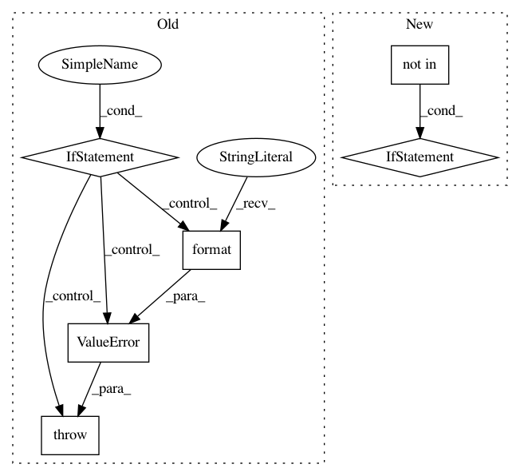

dc09af160f9f04c13fd0764b2712176b83538182,sonnet/python/modules/conv.py,SeparableConv2D,__init__,#SeparableConv2D#Any#Any#Any#Any#Any#Any#Any#Any#Any#Any#Any#,2222
Before Change
super(SeparableConv2D, self).__init__(custom_getter=custom_getter,
name=name)
if not isinstance(output_channels, numbers.Integral) or output_channels < 1:
raise ValueError("output_channels (={}), must be integer >= 1".format(
output_channels))
self._output_channels = output_channels
if (not isinstance(channel_multiplier, numbers.Integral) or
channel_multiplier < 1):
After Change
self._kernel_shape = _fill_and_verify_parameter_shape(kernel_shape, 2,
"kernel")
if data_format not in SUPPORTED_DATA_FORMATS:
raise ValueError("Invalid data_format {:s}. Allowed formats "
"{:s}".format(data_format, SUPPORTED_DATA_FORMATS))
self._data_format = data_format
// We want to support passing native strides akin to [1, m, n, 1]
if isinstance(stride, collections.Iterable) and len(stride) == 4:
In pattern: SUPERPATTERN
Frequency: 3
Non-data size: 6
Instances
Project Name: deepmind/sonnet
Commit Name: dc09af160f9f04c13fd0764b2712176b83538182
Time: 2017-11-09
Author: noreply@google.com
File Name: sonnet/python/modules/conv.py
Class Name: SeparableConv2D
Method Name: __init__
Project Name: chainer/chainercv
Commit Name: 13b66c7352f48d217c14fb26dcf8560c2cb78856
Time: 2017-08-18
Author: shunta.saito@gmail.com
File Name: chainercv/datasets/cityscapes/cityscapes_semantic_segmentation_dataset.py
Class Name: CityscapesSemanticSegmentationDataset
Method Name: __init__
Project Name: tryolabs/luminoth
Commit Name: 3d76f1419df74f80369785cc962f1d143eb172de
Time: 2018-03-20
Author: joaquin.alori@gmail.com
File Name: luminoth/models/ssd/ssd_feature_extractor.py
Class Name: SSDFeatureExtractor
Method Name: __init__